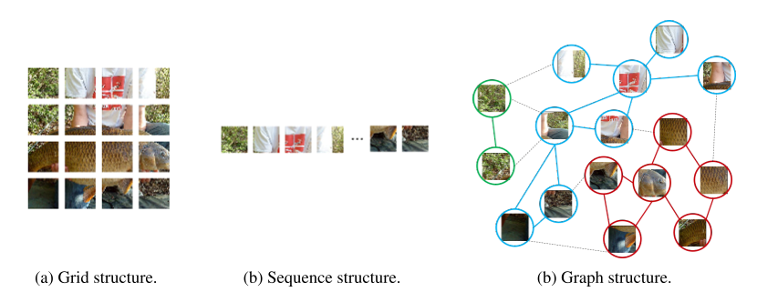
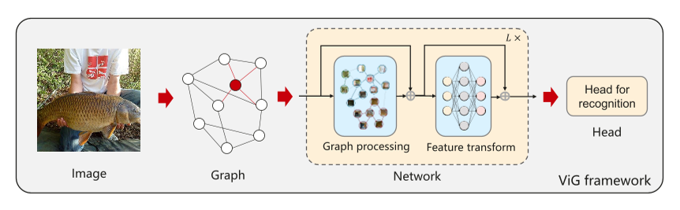
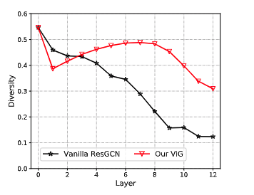
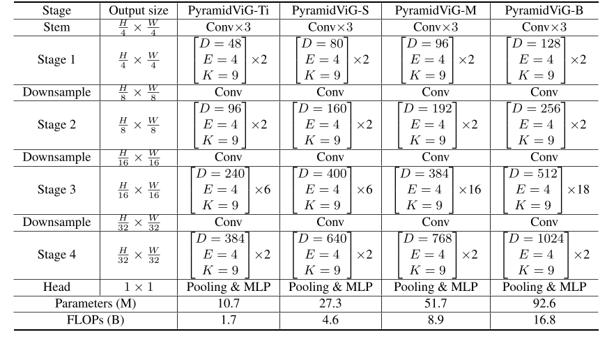

Vision GNN-An Image is Worth Graph of Nodes
Abstract
网络架构在基于深度学习的计算机视觉系统中起着关键作用。
广泛使用的卷积神经网络和transformer将图像视为网格或序列结构，不灵活地捕捉不规则和复杂的物体。
在本文中，我们建议将图像表示为图形结构，并引入新的 Vision GNN (ViG) 架构来提取视觉任务的图形级特征。
我们首先将图像分割成许多块，这些块被视为节点，并通过连接最近的邻居来构造一个图。
基于图像的图表示，我们构建了我们的 ViG 模型来在所有节点之间转换和交换信息。
ViG 由两个基本模块组成：
带有图卷积的 Grapher 模块，用于聚合和更新图信息
带有两个线性层的 FFN 模块，用于节点特征变换
ViG 的各向同性和金字塔结构都是用不同的模型大小构建的。
图像识别和目标检测任务的大量实验证明了我们的 ViG 架构的优越性
我们希望 GNN 在一般视觉任务上的这项开创性研究能为未来的研究提供有益的启发和经验。
1.Introduction
在现代计算机视觉系统中，卷积神经网络 (CNN) 曾经是事实上的标准网络架构 [27、25、16]
最近，针对视觉任务 [8, 3] 引入了具有注意力机制的 Transformer，并获得了具有竞争力的性能。
基于 MLP（多层感知器）的视觉模型 [47、48] 在不使用卷积或自注意力的情况下也可以很好地工作。
这些进展将视觉模型推向了前所未有的高度。
不同的网络以不同的方式处理输入图像。
如图 1 所示，图像数据通常表示为欧几里得空间中的规则像素网格。
CNNs [27] 在图像上应用滑动窗口并引入移位不变性和局部性。 最近的视觉转换器 [8] 或 MLP [47] 将图像视为一系列补丁。
例如，ViT [8] 将一个 224 × 224 的图像划分为多个 16 × 16 的块，并形成一个长度为 196 的序列作为输入。

我们以更灵活的方式处理图像，而不是常规的网格或序列表示。
计算机视觉的一项基本任务是识别图像中的对象。
由于对象通常不是形状不规则的正方形，因此以前的网络（如 ResNet 和 ViT）中常用的网格或序列结构是冗余且不灵活的处理它们。
一个物体可以看成是多个部分的组合，例如，一个人大致可以分为头、上身、手臂和腿。
这些由关节连接起来的部分自然形成了图结构。 通过分析图表，我们能够识别人类。
此外，图是一种广义的数据结构，网格和序列可以看作图的一种特殊情况。
将图像作为图形查看对于视觉感知来说更加灵活和有效。
基于图像的图表示，我们为视觉任务构建了视觉图神经网络（简称ViG）。
我们没有将每个像素视为会导致节点过多（>10K）的节点，而是将输入图像划分为多个补丁并将每个补丁视为一个节点。
在构建图像块图之后，我们使用我们的 ViG 模型在所有节点之间转换和交换信息。
ViG 的基本单元包括两部分：Grapher 和 FFN（前馈网络）模块。
Grapher 模块是基于图卷积构建的，用于图信息处理。
为了缓解传统 GNN 的过度平滑现象，FFN 模块用于节点特征转换和鼓励节点多样性。
借助 Grapher 和 FFN 模块，我们以各向同性和金字塔方式构建 ViG 模型。
在实验中，我们展示了 ViG 模型在图像分类和对象检测等视觉任务上的有效性。
例如，我们的 Pyramid ViG-S 在 ImageNet 分类任务上达到 82.1% 的 top-1 准确率
优于具有代表性的 CNN (ResNet [16])、MLP (CycleMLP [4]) 和 Transformer (Swin-T [33]) 类似的 FLOP（大约 4.5G）。
据我们所知，我们的工作是第一个成功地将图神经网络应用于大规模视觉任务的工作。 我们希望我们的工作能够激发社区进一步探索更强大的网络架构。
2.Related Work
在本节中，我们首先重新审视计算机视觉中的骨干网络。 然后我们回顾了图神经网络的发展，特别是 GCN 及其在视觉任务中的应用。
2.1 CNN, Transformer and MLP for Vision
计算机视觉中的主流网络架构曾经是卷积网络 [27,25,16]。
从 LeNet [27] 开始，CNN 已成功用于各种视觉任务，例如图像分类 [25]、对象检测 [40] 和语义分割 [34]。
CNN 架构在过去十年中发展迅速。 代表作品包括 ResNet [16]、MobileNet [20] 和 NAS [68]。
从 2020 年开始，为视觉任务引入了视觉转换器 [13, 8, 3]。
从那时起，提出了许多 ViT [8] 的变体来提高视觉任务的性能。
主要改进包括金字塔架构 [54, 33]、局部注意力 [14, 33] 和位置编码 [58]。
受视觉转换器的启发，MLP 也在计算机视觉中得到了探索 [47, 48]。
借助专门设计的模块 [4, 30, 11, 46]，MLP 可以实现具有竞争力的性能，并可以处理对象检测和分割等一般视觉任务。
2.2 Graph Neural Network
最早的图神经网络最初是在 [10, 42] 中概述的。
Micheli [36] 通过架构复合非递归层提出了基于空间的图卷积网络的早期形式。
近年来，已经引入了基于空间的 GCN 的变体，例如 [37, 1, 9]。
基于光谱的 GCN 最早由 Bruna 等人提出。 [2] 介绍了基于谱图理论的图卷积。
从那时起，已经提出了许多改进和扩展基于谱的 GCN 的工作 [17, 6, 24]。
GCN 通常应用于图数据，例如社交网络 [12]、引文网络 [43] 和生化图 [53]。
GCN在计算机视觉领域的应用主要包括点云分类、场景图生成、动作识别等。
点云是空间中的一组 3D 点，通常由 LiDAR 扫描收集。
GCN 已被探索用于分类和分割点云 [26, 55]。
场景图生成旨在将输入图像解析为带有对象及其关系的图，这通常通过结合对象检测器和 GCN [60, 63] 来解决。
通过处理链接人体关节的自然形成图，GCN 被用于人体动作识别任务 [23, 62]。
GCN 只能通过自然构建的图来处理特定的视觉任务。
对于计算机视觉中的一般应用，我们需要一个基于 GCN 的骨干网络来直接处理图像数据。
3.Approach
在本节中，我们将描述如何将图像转换为graph，并介绍视觉 GNN 架构来学习视觉表示。

3.1 ViG Block
3.1.1 Graph Structure of Image
对于大小为 H × W × 3 的图像，我们将其划分为 N 个块。
通过将每个补丁转换为特征向量\(x_i \in \mathbb{R}^{D}\)，我们有 X = [x1, x2, ···, xN] 其中 D 是特征维度，i = 1, 2,···, N。
这些特征可以看作是一组无序节点，记为 V = {v1, v2, ···, vN}。
对于每个节点 vi，我们找到它的 K 个最近邻居 N (vi)，并为所有 vj ∈ N (vi) 添加一条从 vj 指向 vi 的边 eji。
然后我们得到一个图 G = (V, E)，其中 E 表示所有边。
下面我们将图构建过程表示为 G = G(X)。 通过将图像视为graph数据，我们探索如何利用 GNN 来提取其表示。
图像的图表示的优点包括：
图是一种广义的数据结构，网格和序列可以看作图的一个特例
graph比网格或序列更灵活地对复杂对象进行建模，因为图像中的对象通常不是正方形，形状不规则
一个物体可以看成是由多个部分组成的（例如，一个人可以大致分为头、上身、手臂和腿），图结构可以构建这些部分之间的联系
GNN 的高级研究可以转移到解决视觉任务
3.1.2 Graph-level processing
一般来说，我们从特征\(x_i \in \mathbb{R}^{N \times D}\)开始。 我们首先根据特征构建一个图：G = G(X)。
图卷积层可以通过聚合来自其相邻节点的特征在节点之间交换信息
具体来说，图卷积操作如下： \[ \begin{aligned} \mathcal{G}^{\prime} &=F(\mathcal{G}, \mathcal{W}) \\ &=\text { Update }\left(\text { Aggregate }\left(\mathcal{G}, W_{a g g}\right), W_{\text {update }}\right) \end{aligned} \] 其中 Wagg 和 Wupdate 分别是聚合和更新操作的可学习权重
更具体地说，聚合操作通过聚合相邻节点的特征来计算节点的表示，更新操作进一步合并聚合的特征： \[ \mathbf{x}_{i}^{\prime}=h\left(\mathbf{x}_{i}, g\left(\mathbf{x}_{i}, \mathcal{N}\left(\mathbf{x}_{i}\right), W_{a g g}\right), W_{\text {update }}\right) \] 其中\(\mathcal{N}\left(\mathbf{x}_{i}^{l}\right)\)是 \(x_i^l\)的邻居节点集。 在这里，我们采用max-relative graph convolution [28] 的简单性和效率： \[ \begin{aligned} &g(\cdot)=\mathbf{x}_{i}^{\prime \prime}=\left[\mathbf{x}_{i}, \max \left(\left\{\mathbf{x}_{j}-\mathbf{x}_{i} \mid j \in \mathcal{N}\left(\mathbf{x}_{i}\right)\right\}\right]\right. \\ &h(\cdot)=\mathbf{x}_{i}^{\prime}=\mathbf{x}_{i}^{\prime \prime} W_{\text {update }} \end{aligned} \] 其中偏置项被省略。 上述图级处理可以表示为 X′ = GraphConv(X)
我们进一步介绍了图卷积的多头更新操作。
聚合后的特征 x′′ i 首先被分成 h 个 head，即 head1、head2、···、headh，然后分别用不同的权重更新这些 head。
所有的头都可以并行更新并连接为最终值： \[ \mathbf{x}_{i}^{\prime}=\left[\text { head }^{1} W_{u p d a t e}^{1}, \text { head }{ }^{2} W_{u p d a t e}^{2}, \cdots, \text { head }{ }^{h} W_{u p d a t e}^{h}\right] \] 多头更新操作允许模型在多个表示子空间中更新信息，这有利于特征的多样性。
3.1.3 ViG block.
以前的 GCN 通常重复使用几个图卷积层来提取图数据的聚合特征。
深度 GCN [29, 38] 中的过度平滑现象会降低节点特征的独特性并导致视觉识别的性能下降，如图 3 所示，其中多样性被测量为 ‖X - 1 ̃ xT ‖ ̃ x = arg min ̃ x ‖X - 1 ̃ xT ‖ [7]。
为了缓解这个问题，我们在 ViG 块中引入了更多的特征转换和非线性激活。

我们在图卷积之前和之后应用一个线性层来将节点特征投影到同一域中并增加特征多样性
在图卷积之后插入一个非线性激活函数以避免层崩溃
我们将升级后的模块称为 Grapher 模块
在实践中，给定输入特征 \(x_i \in \mathbb{R}^{N \times D}\)，Grapher 模块可以表示为 \[ Y=\sigma\left(\operatorname{GraphConv}\left(X W_{i n}\right)\right) W_{o u t}+X \] 其中\(Y \in \mathbb{R}^{N \times D}\)，Win 和 Wout 是全连接层的权重，σ 是激活函数，例如 ReLU 和 GeLU [18]，偏置项被省略。
为了进一步提高特征转换能力并缓解过度平滑现象，我们在每个节点上使用前馈网络（FFN）
FFN 模块是一个简单的多层感知器，具有两个全连接层： \[ Z=\sigma\left(Y W_{1}\right) W_{2}+Y \] 其中\(Z \in \mathbb{R}^{N \times D}\)，W1 和 W2 是全连接层的权重，偏置项被省略。
FFN 的隐藏层维度通常大于 D
在 Grapher 和 FFN 模块中，在每个全连接层或图卷积层之后都应用了批归一化，这在公式中省略了。
Grapher 模块和 FFN 模块的堆栈构成了 ViG 块，作为构建网络的基本构建单元。
基于图像的图形表示和提出的 ViG 块，我们可以为视觉任务构建 ViG 网络，如图 2 所示。
与普通 ResGCN [28] 相比，我们的 ViG 可以保持特征多样性（图 3）作为层 更深入地学习判别表示。
3.2 Network Architecture
在计算机视觉领域，常用的变压器通常具有各向同性架构（例如，ViT [8]），而 CNN 更喜欢使用金字塔架构（即 ResNet [16]）。
为了与其他类型的神经网络进行广泛比较，我们为 ViG 构建了两种网络架构，即各向同性架构和金字塔架构。
3.2.1 Isotropic architecture
各向同性架构意味着主体在整个网络中具有相同大小和形状的特征，例如 ViT [8] 和 ResMLP [48]。
我们构建了三个版本的各向同性 ViG 架构，模型大小不同，即 ViG-Ti、S 和 B。
节点数设置为 N = 196。
为了逐渐扩大感受野，邻居节点数 K 从 9 个增加 随着层在这三个模型中的深入，线性增加到 18。
默认情况下，头数设置为 h = 4。 详细信息列于表 1。 \[ \begin{array}{l|c|c|c|c} \hline \text { Model } & \text { Depth } & \text { Dimension } D & \text { Params (M) } & \text { FLOPs (B) } \\ \hline \text { ViG-Ti } & 12 & 192 & 7.1 & 1.3 \\ \text { ViG-S } & 16 & 320 & 22.7 & 4.5 \\ \text { ViG-B } & 16 & 640 & 86.8 & 17.7 \\ \hline \end{array} \]
3.2.2 Pyramid architecture.
Pyramid 架构考虑了图像的多尺度特性，通过随着层的深入提取空间尺寸逐渐变小的特征，例如 ResNet [16] 和 PVT [54]。
经验证据表明，金字塔架构对于视觉任务是有效的 [54]。 因此，我们利用先进的设计并构建了四个版本的金字塔 ViG 模型。 详情如表 2 所示。

3.2.3 Positional encoding
为了表示节点的位置信息，我们给每个节点特征添加一个位置编码向量： \[ x_i \leftarrow x_i + e_i \] 其中 ei ∈ RD。
等式中描述的绝对位置编码适用于各向同性和金字塔结构。
对于金字塔 ViG，我们按照 Swin Transformer [33] 等高级设计进一步包括相对位置编码。
对于节点 i 和 j，它们之间的相对位置距离为 \(e_i^T e_j\)，将添加到构建图的特征距离中。